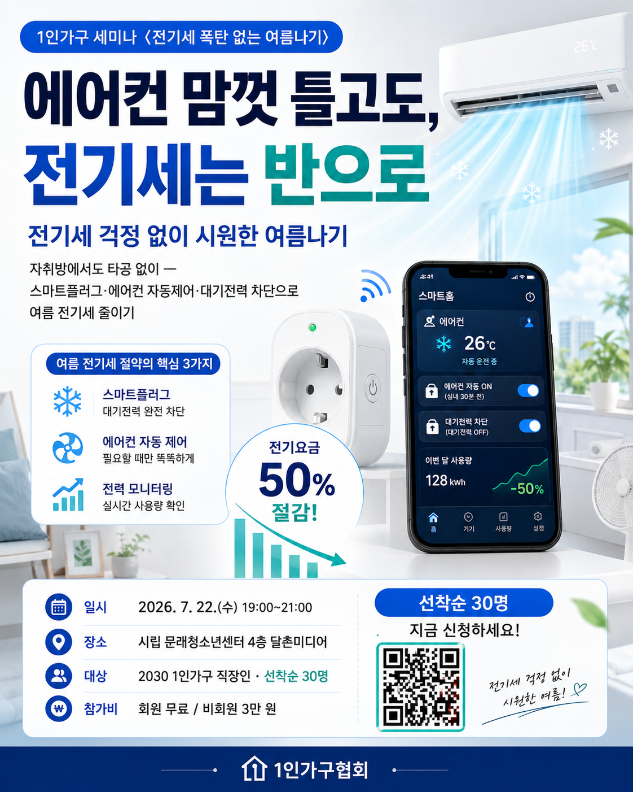

|
|
|
제4호 · 2026.07.06(월)
혼자 사는 삶을 위한
한 주의 정책·생활 소식
7월 세미나 신청 접수 중 · 8·9월 세미나 예고 · 지난주 블로그 5편
|
|
안녕하세요, 1인가구협회 가족 여러분. 본격적인 여름 더위가 시작됐습니다. 냉방·수분 잘 챙기시고 건강한 한 주 보내세요.
이번 KSA WEEKLY 제4호에서는 신청 접수 중인 7월 세미나 소식과 함께, 지난 한 주(6/29~7/3) 협회 블로그에 올라온 정책·생활 이야기 5편을 모았습니다. 마음 돌봄부터 폭염 안전, 하반기 서울 변화까지 여름을 든든하게 날 정보들입니다. 편하게 둘러보세요.
|
|
🔥 7월 정기 세미나 · 신청 접수 중
전기세 폭탄 없는 여름나기
자취방 스마트홈 & 가사 자동화 · 혼자 살아도 더 편리하고 안전하게

|
🗓 일시 2026. 7. 22(수) 19:00~21:00
📍 장소 시립 문래청소년센터 4층 달촌미디어 (2호선 문래역 3번 출구)
🎤 강사 오날도 (스마트홈·전력 자동화)
👥 대상 2030 1인가구 직장인 30명 내외 · 참가비 회원 무료 / 비회원 3만 원
📝 내용 스마트 조명·플러그·AI 스피커·로봇청소기 등 가사 자동화와 냉방·전력 절약으로 누진제 부담 줄이기
|
신청 forms.gle/WgVo7wZkKgENKNQB7 · 문의 02-2635-9076
|
|
🗓 다가오는 세미나 예고 · 8·9월
“좁은 원룸이 두 배 넓어지는 법” *8월 · 제목 가안
【8월】 자취방 공간정리 & 셀프 인테리어
버리는 기준부터 수납·동선 재배치, 저예산 셀프 인테리어까지 — 이사 없이도 우리 집이 달라집니다. 보증금 안 깎이는 원상복구 꿀팁도 함께 챙겨요. 8월 개최 예정.
【9월】 NEW
“옷장은 작아도, 스타일은 크게” · 1인가구 패션·옷장 클래스 *제목 가안
적은 옷으로 매일 다른 코디 — 혼자서도 멋스럽게. 미니멀 옷장 정리부터 체형별 스타일링까지, 돈 더 쓰지 않고 ‘나다운 룩’ 만들기. 9월 개최 예정 · 일정·신청은 협회 홈페이지·인스타그램에서 안내드립니다.
|
|
|
노쇼 방지를 위한 세미나 운영 안내
🎁 강의 자료집·강의안 제공 — 정기 세미나에 참석하신 분들께만 강의 자료집과 강의안을 함께 드립니다.
🤝 참여 약속 안내 — 소중한 한 자리를 끝까지 함께해 주시는 문화를 위해, 참가비를 회원 무료 · 비회원 3만 원으로 운영합니다.
|
|
|
지난주 블로그 다이제스트 · 6/29~7/3
01 정신건강 심리상담 바우처 — 무료 8회 상담
02 여름, 1인가구 지원센터 활용법
03 폭염 온열질환 — 1인가구 여름 안전수칙
04 2026 하반기 달라지는 서울 (마음편의점 4→25)
05 1인가구 지역별 분포 지도
|
|
① 정신건강 심리상담 바우처 — 무료 8회 상담
몸이 아프면 병원에 가면서, 마음이 무거운 날엔 그냥 버티는 분이 많습니다. 보건복지부 ‘정신건강 심리상담 바우처’는 전문 상담사에게 1:1 대면 상담을 총 8회(회당 50분+) 부담 적게 받을 수 있는 제도로, 2026년에도 연중 신청을 받습니다. 감정을 혼자 오래 쌓아두기 쉬운 1인가구라면, 두 달 남짓 같은 상담사와 마음을 정리해 볼 좋은 기회입니다.
블로그에서 전문 보기 ›
|
② 여름, 1인가구 지원센터 이렇게 활용하세요
여름은 1인가구에게 외로움이 깊어지기 쉬운 계절입니다. 서울 24개 자치구의 1인가구 지원센터는 공유주방·상담실·라운지를 갖춘 생활 거점으로, 누구나 무료로 드나들며 요리·자조모임·프로그램에 참여할 수 있습니다. ‘씽글벙글 사랑방’에서 비슷한 관심사의 이웃을 만나 ‘따로, 또 같이’의 여름을 보내보세요.
블로그에서 전문 보기 ›
|
③ 폭염 온열질환 — 1인가구 여름 안전수칙
온열질환은 야외에서만 생기지 않습니다. 2025년 온열질환자는 4,460명(사망 29명)으로 2018년 이후 최다였고, 실내 발생도 7%를 넘었습니다. 냉방이 약한 원룸·반지하·옥탑에 혼자 살면 이상 신호를 알아챌 사람이 없어 더 위험합니다. 수분 섭취·한낮 외출 자제·실내 온도 관리 등 나를 지키는 여름 안전수칙을 정리했습니다.
블로그에서 전문 보기 ›
|
④ 2026 하반기 달라지는 서울 — 1인가구 체크포인트
서울시가 하반기 새 정책·시설을 모은 『2026 하반기 달라지는 서울생활』을 발간했습니다(총 60개 사업). 1인가구 일상과 바로 닿는 것들이 많은데, 특히 마음을 나누는 ‘서울마음편의점’이 4곳→25곳으로 대폭 확대되고 취약 1인가구 식생활 돌봄도 강화됩니다. ‘돈을 얹어주는’ 지원을 넘어 외로움·고립 예방으로 무게가 옮겨가는 흐름입니다.
블로그에서 전문 보기 ›
|
⑤ 1인가구 지역별 분포, 어디에 가장 많이 살까
혼자 사는 이웃은 어디에 많을까요? 2024년 1인가구는 804만 5천 가구(전체의 36.1%), 세 집 중 한 집입니다. 인원수로는 수도권 집중(서울·경기에 42.7%)이 뚜렷하고, 비율로 보면 또 다른 무늬가 나타납니다. 국가데이터처 「2025 통계로 보는 1인가구」를 지도 위에 펼쳐, 내가 사는 지역이 전국에서 어떤 자리인지 살펴봅니다.
블로그에서 전문 보기 ›
|
|
|
|
사단법인 1인가구협회 (Korea Small Household Association)
홈페이지 ksaofficial.co.kr · T. 02-2635-9076 · 본 메일은 협회 회원님께 발송되는 주간 소식지입니다.
※ 게재 정보는 발행 시점 기준이며 실제 일정·혜택은 변경될 수 있습니다.
문의하기 · info.ksaofficial@gmail.com
|